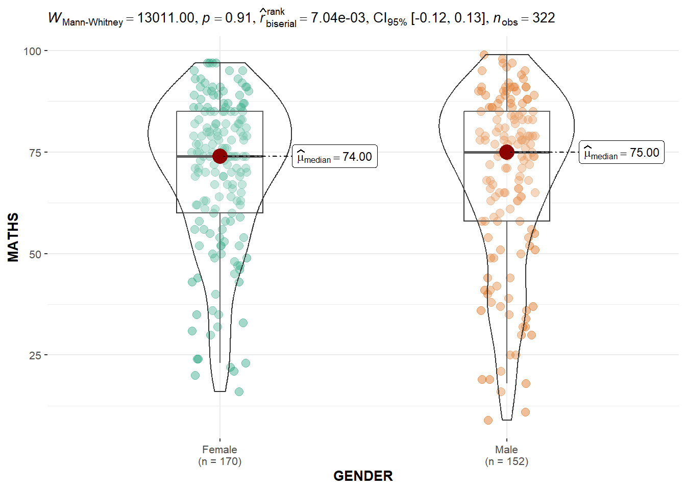

Show code
pacman::p_load(ggstatsplot, tidyverse)Visual Statistical Analysis
Note: Last modified to include author’s details.
This hands-on exercise 4 is split into four segments:
Visualising Distribution
Visual Statistical Analysis
Visualising Uncertainty
Building Funnel Plot with R
ggstatsplot is an extension of ggplot2 package for creating graphics with details from statistical tests included in the information-rich plots themselves.
To provide alternative statistical inference methods by default.
To follow best practices for statistical reporting. For all statistical tests reported in the plots, the default template abides by the APA gold standard for statistical reporting. For example, here are results from a robust t-test:
For the purpose of this exercise, the following R packages will be used, they are:
tidyverse, a family of R packages for data MATHS process,
ggstatsplot, a ggplot2 extension specially designed for creating statistical graphics.
pacman::p_load(ggstatsplot, tidyverse)exam <- read_csv("data/Exam_data.csv")summary(exam) ID CLASS GENDER RACE
Length:322 Length:322 Length:322 Length:322
Class :character Class :character Class :character Class :character
Mode :character Mode :character Mode :character Mode :character
ENGLISH MATHS SCIENCE
Min. :21.00 Min. : 9.00 Min. :15.00
1st Qu.:59.00 1st Qu.:58.00 1st Qu.:49.25
Median :70.00 Median :74.00 Median :65.00
Mean :67.18 Mean :69.33 Mean :61.16
3rd Qu.:78.00 3rd Qu.:85.00 3rd Qu.:74.75
Max. :96.00 Max. :99.00 Max. :96.00 Default information: - statistical details - Bayes Factor - sample sizes - distribution summary. gghistostats() is used to to build an visual of one-sample test on English scores.
set.seed(1234)
gghistostats(
data = exam,
x = ENGLISH,
type = "bayes",
test.value = 60,
xlab = "English scores"
)
Default information: - statistical details - Bayes Factor - sample sizes - distribution summary. ggbetweenstats() is used to build a visual for two-sample mean test of Maths scores by gender.
ggbetweenstats(
data = exam,
x = GENDER,
y = MATHS,
type = "np",
messages = FALSE
)
ggbetweenstats() is used to build a visual for One-way ANOVA test on English score by race.
“ns” → only non-significant
“s” → only significant
“all” → everything
ggbetweenstats(
data = exam,
x = RACE,
y = ENGLISH,
type = "p",
mean.ci = TRUE,
pairwise.comparisons = TRUE,
pairwise.display = "s",
p.adjust.method = "fdr",
messages = FALSE
)
ggscatterstats() is used to build a visual for Significant Test of Correlation between Maths scores and English scores.
ggscatterstats(
data = exam,
x = MATHS,
y = ENGLISH,
marginal = FALSE,
)
In the code chunk below, the Maths scores is binned into a 4-class variable by using cut() and ggbarstats() is used to build a visual for Significant Test of Association.
exam1 <- exam %>%
mutate(MATHS_bins =
cut(MATHS,
breaks = c(0,60,75,85,100))
)
ggbarstats(exam1,
x = MATHS_bins,
y = GENDER)
To build a model to discover factors affecting prices of used-cars by taking into consideration a set of explanatory variables.
pacman::p_load(readxl, performance, parameters, see)For the purpose of this exercise, ToyotaCorolla.xls workbook will be imported into R.
Notice that the output object car_resale is a tibble data frame.
car_resale <- read_xls("data/ToyotaCorolla.xls",
"data")
car_resale# A tibble: 1,436 × 38
Id Model Price Age_08_04 Mfg_Month Mfg_Year KM Fuel_Type HP
<dbl> <chr> <dbl> <dbl> <dbl> <dbl> <dbl> <chr> <dbl>
1 1 TOYOTA Coroll… 13500 23 10 2002 46986 Diesel 90
2 2 TOYOTA Coroll… 13750 23 10 2002 72937 Diesel 90
3 3 TOYOTA Corol… 13950 24 9 2002 41711 Diesel 90
4 4 TOYOTA Coroll… 14950 26 7 2002 48000 Diesel 90
5 5 TOYOTA Coroll… 13750 30 3 2002 38500 Diesel 90
6 6 TOYOTA Coroll… 12950 32 1 2002 61000 Diesel 90
7 7 TOYOTA Corol… 16900 27 6 2002 94612 Diesel 90
8 8 TOYOTA Coroll… 18600 30 3 2002 75889 Diesel 90
9 9 TOYOTA Corol… 21500 27 6 2002 19700 Petrol 192
10 10 TOYOTA Corol… 12950 23 10 2002 71138 Diesel 69
# ℹ 1,426 more rows
# ℹ 29 more variables: Met_Color <dbl>, Color <chr>, Automatic <dbl>, CC <dbl>,
# Doors <dbl>, Cylinders <dbl>, Gears <dbl>, Quarterly_Tax <dbl>,
# Weight <dbl>, Mfr_Guarantee <dbl>, BOVAG_Guarantee <dbl>,
# Guarantee_Period <dbl>, ABS <dbl>, Airbag_1 <dbl>, Airbag_2 <dbl>,
# Airco <dbl>, Automatic_airco <dbl>, Boardcomputer <dbl>, CD_Player <dbl>,
# Central_Lock <dbl>, Powered_Windows <dbl>, Power_Steering <dbl>, …summary(car_resale) Id Model Price Age_08_04
Min. : 1.0 Length:1436 Min. : 4350 Min. : 1.00
1st Qu.: 361.8 Class :character 1st Qu.: 8450 1st Qu.:44.00
Median : 721.5 Mode :character Median : 9900 Median :61.00
Mean : 721.6 Mean :10731 Mean :55.95
3rd Qu.:1081.2 3rd Qu.:11950 3rd Qu.:70.00
Max. :1442.0 Max. :32500 Max. :80.00
Mfg_Month Mfg_Year KM Fuel_Type
Min. : 1.000 Min. :1998 Min. : 1 Length:1436
1st Qu.: 3.000 1st Qu.:1998 1st Qu.: 43000 Class :character
Median : 5.000 Median :1999 Median : 63390 Mode :character
Mean : 5.549 Mean :2000 Mean : 68533
3rd Qu.: 8.000 3rd Qu.:2001 3rd Qu.: 87021
Max. :12.000 Max. :2004 Max. :243000
HP Met_Color Color Automatic
Min. : 69.0 Min. :0.0000 Length:1436 Min. :0.00000
1st Qu.: 90.0 1st Qu.:0.0000 Class :character 1st Qu.:0.00000
Median :110.0 Median :1.0000 Mode :character Median :0.00000
Mean :101.5 Mean :0.6748 Mean :0.05571
3rd Qu.:110.0 3rd Qu.:1.0000 3rd Qu.:0.00000
Max. :192.0 Max. :1.0000 Max. :1.00000
CC Doors Cylinders Gears Quarterly_Tax
Min. : 1300 Min. :2.000 Min. :4 Min. :3.000 Min. : 19.00
1st Qu.: 1400 1st Qu.:3.000 1st Qu.:4 1st Qu.:5.000 1st Qu.: 69.00
Median : 1600 Median :4.000 Median :4 Median :5.000 Median : 85.00
Mean : 1577 Mean :4.033 Mean :4 Mean :5.026 Mean : 87.12
3rd Qu.: 1600 3rd Qu.:5.000 3rd Qu.:4 3rd Qu.:5.000 3rd Qu.: 85.00
Max. :16000 Max. :5.000 Max. :4 Max. :6.000 Max. :283.00
Weight Mfr_Guarantee BOVAG_Guarantee Guarantee_Period
Min. :1000 Min. :0.0000 Min. :0.0000 Min. : 3.000
1st Qu.:1040 1st Qu.:0.0000 1st Qu.:1.0000 1st Qu.: 3.000
Median :1070 Median :0.0000 Median :1.0000 Median : 3.000
Mean :1072 Mean :0.4095 Mean :0.8955 Mean : 3.815
3rd Qu.:1085 3rd Qu.:1.0000 3rd Qu.:1.0000 3rd Qu.: 3.000
Max. :1615 Max. :1.0000 Max. :1.0000 Max. :36.000
ABS Airbag_1 Airbag_2 Airco
Min. :0.0000 Min. :0.0000 Min. :0.0000 Min. :0.0000
1st Qu.:1.0000 1st Qu.:1.0000 1st Qu.:0.0000 1st Qu.:0.0000
Median :1.0000 Median :1.0000 Median :1.0000 Median :1.0000
Mean :0.8134 Mean :0.9708 Mean :0.7228 Mean :0.5084
3rd Qu.:1.0000 3rd Qu.:1.0000 3rd Qu.:1.0000 3rd Qu.:1.0000
Max. :1.0000 Max. :1.0000 Max. :1.0000 Max. :1.0000
Automatic_airco Boardcomputer CD_Player Central_Lock
Min. :0.00000 Min. :0.0000 Min. :0.0000 Min. :0.0000
1st Qu.:0.00000 1st Qu.:0.0000 1st Qu.:0.0000 1st Qu.:0.0000
Median :0.00000 Median :0.0000 Median :0.0000 Median :1.0000
Mean :0.05641 Mean :0.2946 Mean :0.2187 Mean :0.5801
3rd Qu.:0.00000 3rd Qu.:1.0000 3rd Qu.:0.0000 3rd Qu.:1.0000
Max. :1.00000 Max. :1.0000 Max. :1.0000 Max. :1.0000
Powered_Windows Power_Steering Radio Mistlamps
Min. :0.000 Min. :0.0000 Min. :0.0000 Min. :0.000
1st Qu.:0.000 1st Qu.:1.0000 1st Qu.:0.0000 1st Qu.:0.000
Median :1.000 Median :1.0000 Median :0.0000 Median :0.000
Mean :0.562 Mean :0.9777 Mean :0.1462 Mean :0.257
3rd Qu.:1.000 3rd Qu.:1.0000 3rd Qu.:0.0000 3rd Qu.:1.000
Max. :1.000 Max. :1.0000 Max. :1.0000 Max. :1.000
Sport_Model Backseat_Divider Metallic_Rim Radio_cassette
Min. :0.0000 Min. :0.0000 Min. :0.0000 Min. :0.0000
1st Qu.:0.0000 1st Qu.:1.0000 1st Qu.:0.0000 1st Qu.:0.0000
Median :0.0000 Median :1.0000 Median :0.0000 Median :0.0000
Mean :0.3001 Mean :0.7702 Mean :0.2047 Mean :0.1455
3rd Qu.:1.0000 3rd Qu.:1.0000 3rd Qu.:0.0000 3rd Qu.:0.0000
Max. :1.0000 Max. :1.0000 Max. :1.0000 Max. :1.0000
Tow_Bar
Min. :0.0000
1st Qu.:0.0000
Median :0.0000
Mean :0.2779
3rd Qu.:1.0000
Max. :1.0000 The code chunk below is used to calibrate a multiple linear regression model by using lm() of Base Stats of R.
model <- lm(Price ~ Age_08_04 + Mfg_Year + KM +
Weight + Guarantee_Period, data = car_resale)
model
Call:
lm(formula = Price ~ Age_08_04 + Mfg_Year + KM + Weight + Guarantee_Period,
data = car_resale)
Coefficients:
(Intercept) Age_08_04 Mfg_Year KM
-2.637e+06 -1.409e+01 1.315e+03 -2.323e-02
Weight Guarantee_Period
1.903e+01 2.770e+01 In the code chunk, check_collinearity() of performance package.
check_collinearity(model)# Check for Multicollinearity
Low Correlation
Term VIF VIF 95% CI Increased SE Tolerance Tolerance 95% CI
KM 1.46 [ 1.37, 1.57] 1.21 0.68 [0.64, 0.73]
Weight 1.41 [ 1.32, 1.51] 1.19 0.71 [0.66, 0.76]
Guarantee_Period 1.04 [ 1.01, 1.17] 1.02 0.97 [0.86, 0.99]
High Correlation
Term VIF VIF 95% CI Increased SE Tolerance Tolerance 95% CI
Age_08_04 31.07 [28.08, 34.38] 5.57 0.03 [0.03, 0.04]
Mfg_Year 31.16 [28.16, 34.48] 5.58 0.03 [0.03, 0.04]check_c <- check_collinearity(model)
plot(check_c)
In the code chunk, check_normality() of performance package.
model1 <- lm(Price ~ Age_08_04 + KM +
Weight + Guarantee_Period, data = car_resale)check_n <- check_normality(model1)plot(check_n)In the code chunk, check_heteroscedasticity() of performance package.
check_h <- check_heteroscedasticity(model1)plot(check_h)
Perform the complete by using check_model().
check_model(model1)In the code below, plot() of see package and parameters() of parameters package is used to visualise the parameters of a regression model.
plot(parameters(model1))
In the code below, ggcoefstats() of ggstatsplot package to visualise the parameters of a regression model.
ggcoefstats(model1,
output = "plot")